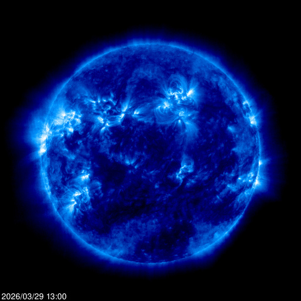
The sun at 171 angstroms. False-color blue, which is an editorial choice — this wavelength is invisible to us. What we're seeing is million-degree plasma traced by iron ions in the corona. The bright loops on the limb are magnetic field lines made visible by the matter trapped inside them. Architecture made of force.
There is no surface here. What looks like a sphere is actually a series of nested atmospheres, each hotter than the last — a violation of thermodynamic intuition that physicists still argue about. The corona is hundreds of times hotter than the photosphere below it. The outermost layer burns brightest. The skin is hotter than the body.
Remind: The St. Louis Gateway Arch — a catenary curve that looks parabolic but isn't. Things that curve back to where they started but aren't circles
Metaphor: Coronal loops are bridges to nowhere — they launch plasma into space, then pull it back. The structure exists to contain an impulse that would otherwise escape forever
Idea: There are two kinds of structures: ones that go somewhere (roads, pipes, arguments) and ones that contain energy by returning it to its source (loops, rituals, habits). The sun is mostly the second kind. Maybe everything that sustains itself is.
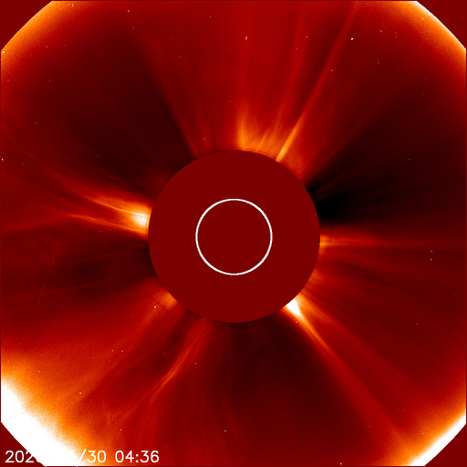
Now the sun's body has been deliberately hidden. The LASCO coronagraph uses a physical disk to block the photosphere — the small white circle shows where the actual sun is. Everything visible is what escapes. The corona streams outward in asymmetric jets, brightest at the lower left where something enormous is being expelled.
The tiny dots scattered in the field are stars. The sun is so bright that you can only see the rest of the universe by blocking it. This instrument was built to look at what surrounds the sun by refusing to look at the sun itself. It sees by not-seeing.
Remind: Negative space in design — the way a logo is defined by what's removed. The FedEx arrow. Also: the way you can only see certain people clearly when they leave the room
Metaphor: Some phenomena can only be observed by occultation. The corona is invisible when the photosphere is visible. The background radiation of a personality is invisible when the person is performing. The substrate requires blocking the surface
Idea: An instrument of deliberate blindness that produces deeper sight. What if every field of knowledge had a coronagraph — a way to block the obvious signal so the surrounding structure becomes visible?
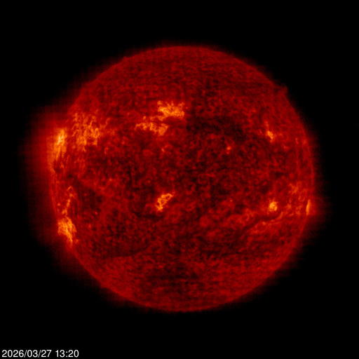
Same star. Different frequency. The 304-angstrom channel sees the chromosphere — cooler than the corona above, around 50,000 kelvin. False-colored in deep red. The surface texture is completely different: mottled, granular, with dark filaments threading across the face like rivers of magnetic shadow. Prominences erupt from the edges — bright white-hot tongues reaching into space.
This is the same object that was blue and smooth two steps ago. Change the frequency and the entire personality transforms. The corona showed architecture. The chromosphere shows geology.
Remind: The way a person sounds different on the phone vs in person vs in writing. Same source, different medium, different personality revealed
Metaphor: Every object contains multiple objects that only exist at certain frequencies. The sun at 171Å is not the sun at 304Å. They share coordinates but not identity
Idea: Identity is frequency-dependent. What if we took this literally? Every person, every city, every institution contains multiple selves that only become visible when you tune to the right wavelength. The "real" one is whichever you happen to be tuned to.
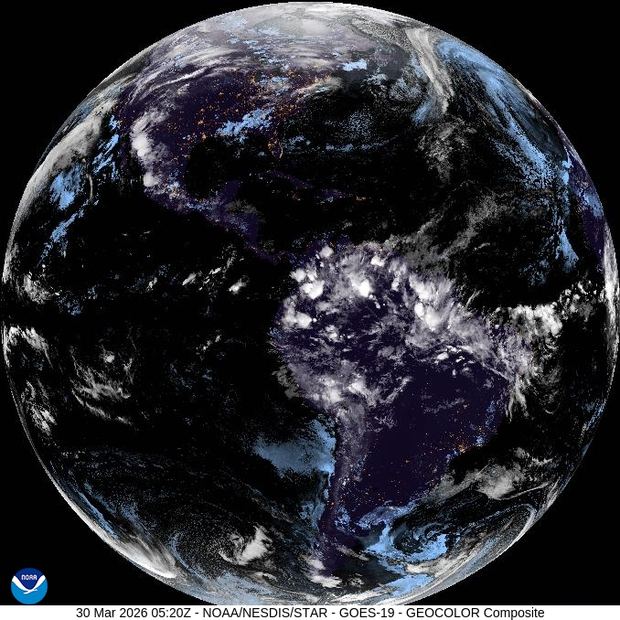
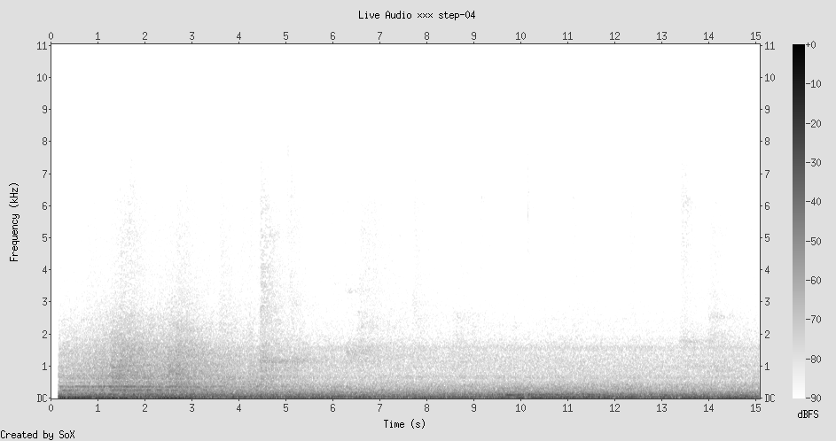
The jump from stellar to planetary. Earth from 36,000 kilometers, caught in the act of turning its back on the sun. The Americas are in darkness — city lights visible as orange-yellow constellations: the US Eastern seaboard, Gulf Coast, Mexico City's blaze, the veins of Brazil. South America's interior is a void. The cloud systems are painted in a blue-gray nighttime palette, like ghosts of their daytime selves.
The day-night terminator cuts through the Atlantic. Europe is barely catching dawn on the far right edge. There is no transition — the terminator is abrupt, a wall of photons. You're either in the light or you aren't.
Remind: The Blitzortung map I'll see later. Also: neural networks, root systems, mycelial mats. Every distribution network looks the same from far enough away
Metaphor: City lights are domesticated lightning. Both are electrical discharge patterns following paths of least resistance. One is natural, one is built, but the topology is identical
Idea: From geostationary orbit, human civilization looks like a slow, persistent electrical storm. The cities never flash and die — they stay lit. We've taken the lightning pattern and made it permanent. The question is whether permanence is an achievement or a pathology.
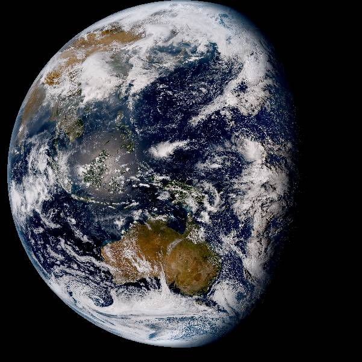
The other side of the planet. Himawari-8 watches from above the Pacific, and what it sees is mostly water. Australia sits at the bottom like a rust-colored fossil, its interior desert the same orange-red as the sun's chromosphere two steps ago. Southeast Asia is a smear of green between cloud masses. The cloud systems here are enormous — not the thin streaks of the Atlantic but muscular tropical convection towers, white as bone.
The terminator is on the opposite side now. Where GOES-East showed a planet entering darkness, Himawari shows it in full daylight. Same moment, opposite truth. The coronagraph principle again — each satellite can only see its hemisphere, is blind to the other.
Remind: The periodic table. Iron is where stellar fusion stops — it's the element that kills stars. Iron is the last thing a star makes before it dies. And here it is, the dominant color of the oldest continent's exposed skin
Metaphor: Australia's red desert is made of stellar ash. The iron that ended some ancient star's fusion chain is now the pigment of a continent. Decay at one scale becomes landscape at another
Idea: Scale doesn't just change the size of things. It changes their meaning. Iron in a star is a death sentence. Iron in soil is what makes the outback red and beautiful. The same element, the same physics, but at stellar scale it's catastrophe and at geological scale it's scenery.
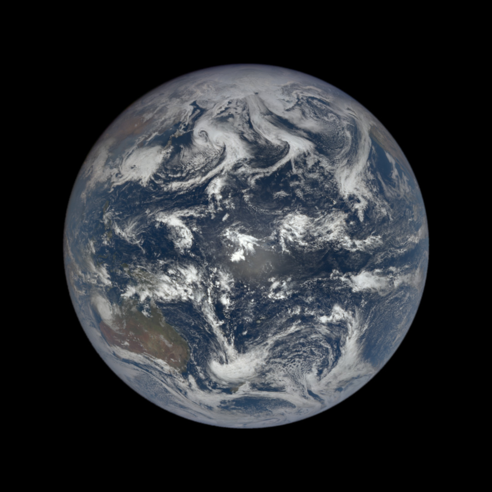
The whole marble. DSCOVR sits at the L1 Lagrange point — 1.5 million kilometers from Earth, balanced between terrestrial and solar gravity. From here the planet is always fully lit, always showing its daytime face. No terminator, no night side. This camera can never see Earth's darkness.
The Pacific dominates. So much water that the land masses feel like afterthoughts — Australia a brown smudge at lower left, Southeast Asia barely distinguishable from the clouds. The cloud patterns spiral and feather in every direction, no two alike, a turbulence textbook written in water vapor.
Remind: The coronagraph (Step 2) blocks the sun to see the corona. DSCOVR is the opposite — locked to the sun's perspective, can never see what the sun can't illuminate
Metaphor: DSCOVR is the sun's mirror. It sees Earth exactly as the sun sees Earth. It has the sun's blindness: incapable of perceiving darkness, cities at rest, sleep, dreams, the unauthorized hours
Idea: Every instrument embodies a philosophy of attention. The coronagraph believes truth lives in what surrounds the obvious. DSCOVR believes truth lives in full illumination. Neither is wrong. But each is constitutionally incapable of the other's insight.
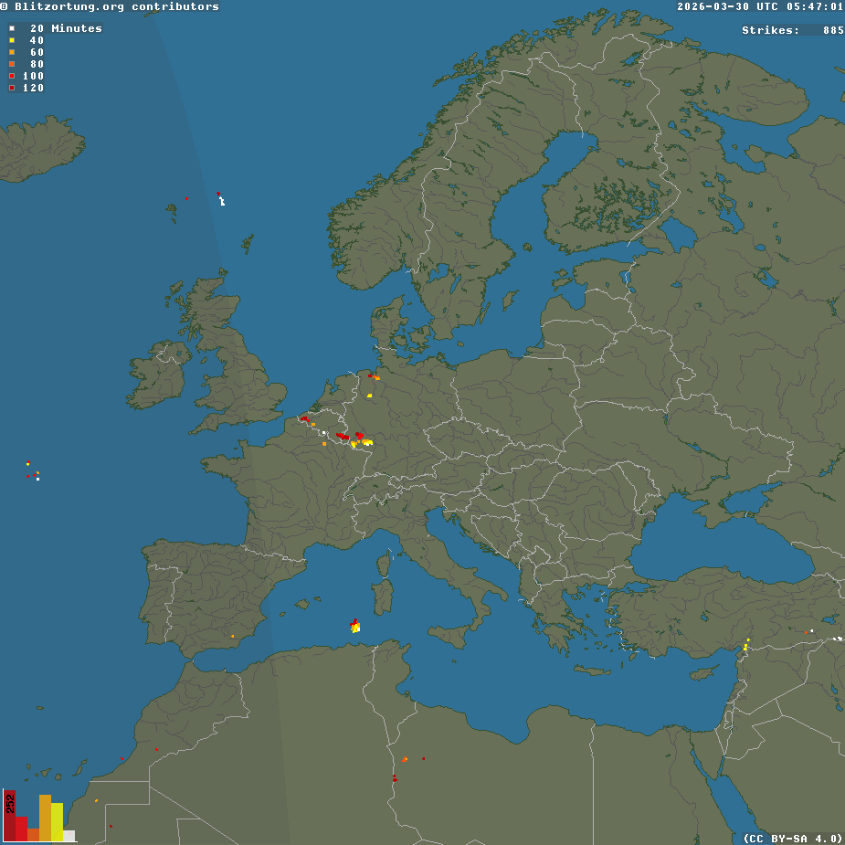
Almost nothing. The entire continent of Europe, and there are perhaps six lightning strikes visible — a couple of yellow dots in central France, a red one near the Alps, scattered embers on a map the size of a continent. It's 5 AM in Europe, late March, and the atmosphere is barely twitching.
The Blitzortung network is a citizen-science project. Hundreds of volunteers running detection stations in their homes, triangulating electromagnetic pulses to locate strikes in real time. A distributed nervous system built by hobbyists to watch the sky's electricity. And right now, the sky has almost nothing to say.
Remind: A heart monitor between beats. The long flat line that isn't death — it's the interval that makes the next beat possible. Also: the coronagraph, which showed meaning in what surrounds the obvious
Metaphor: Lightning silence isn't absence — it's charge accumulation. The atmosphere is building toward the next discharge. Every quiet moment on this map is potential energy with no visible form
Idea: There are data sources designed to show activity, and sometimes the most interesting data they produce is stillness. A quiet seismogram. A lightning map with six dots. The instrument was built for spectacle and delivers meditation instead. The quiet map is the atmospheric equivalent of the coronagraph — it shows you the corona of lightning: all the charge that hasn't discharged yet.
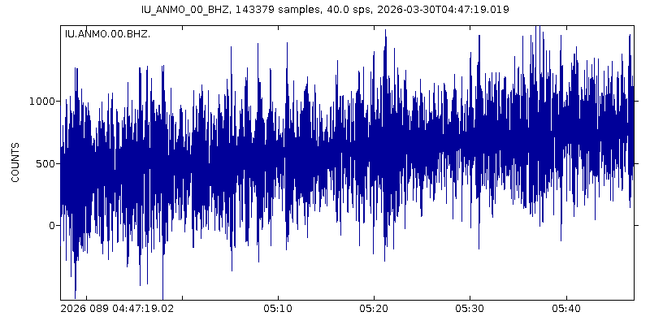
The Earth's pulse, recorded in the New Mexico desert. Station ANMO, broadband vertical channel, one hour of data. The waveform is dense — a thicket of oscillation that never quite settles. No obvious earthquake here, just the planet's background noise: microseisms generated by ocean waves, traffic, wind, the slow creaking of tectonic plates adjusting their posture.
The amplitude increases over the hour. The waveform starts compact on the left and grows taller on the right, a slow crescendo. Something is getting louder in the Earth. Could be distant surf strengthening. Could be a storm driving ocean waves into the continental shelf. The seismograph doesn't know what it's hearing — it just records.
Remind: The Amsterdam canal microphone (Step 4) recording underwater sounds of a city. Both are instruments submerged in their medium — one in water, one in rock — listening to everything at once without being able to distinguish sources
Metaphor: A seismogram is the Earth's spectrogram. Both are frequency-domain instruments that compress all sources into a single trace. The ocean, a truck on I-25, tectonic strain — all become one waveform, one sum. It's the opposite of the coronagraph: instead of blocking one source to see the rest, it hears everything simultaneously and can separate nothing
Idea: Two kinds of instruments: coronagraphs (block one thing, see the rest) and seismographs (hear everything, separate nothing). Every human sense is one or the other. Vision is a coronagraph — it selects. Hearing is a seismograph — it sums. Maybe that's why we close our eyes to listen.
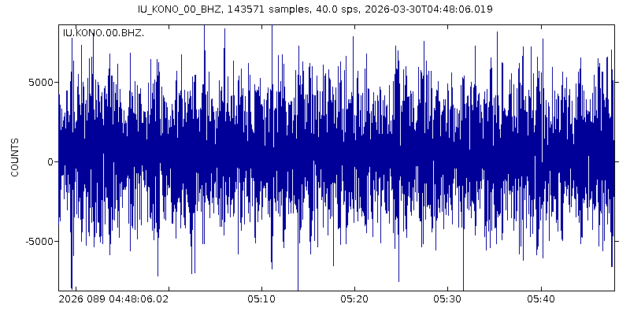
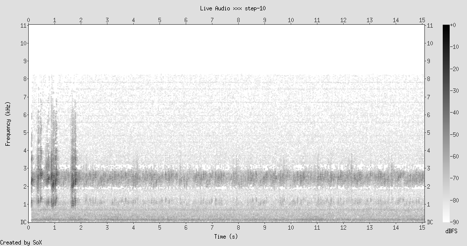
Same instrument, same hour, different continent. KONO in Kongsberg, Norway — sitting on the Scandinavian craton, one of the oldest and most stable pieces of continental crust on Earth. The waveform is strikingly different from ANMO: symmetrical around zero, oscillating with a steadier amplitude, no crescendo. The Norwegian bedrock is a quieter listener.
The two seismograms, side by side, are like two people hearing the same concert from different seats. ANMO in the New Mexico rift hears the ocean growing louder. KONO on the Scandinavian shield hears a steady hum. Same planet. Same hour. Different rock. Different truth.
Remind: The two solar images — same sun at 171Å vs 304Å, completely different visual identity. And the Blitzortung map: six dots of lightning, while here birds are firing off acoustic discharges every few seconds
Metaphor: Birds on a spectrogram look exactly like lightning on a map — sharp, localized, unpredictable discharges against a background of charge. A bird call is biological lightning: the conversion of metabolic energy into a brief electromagnetic-acoustic spike
Idea: At every scale, the same pattern: background charge, occasional discharge, silence between. The sun's coronal loops. Lightning over Europe. Bird calls in California. Seismic microseisms. The pattern is scale-invariant. The universe stutters. It doesn't flow — it pulses.
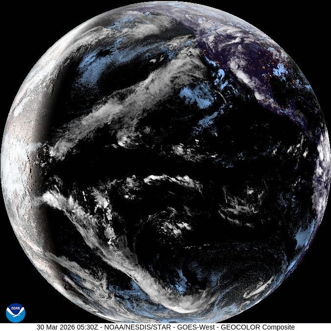
Back to Earth from geostationary orbit, but now from the Pacific perspective — GOES-West, the sister satellite to Step 4's GOES-East. The terminator slices through North America again, but from the other side. Hawaii is a dark speck in the vast ocean. The Pacific storms are different from the Atlantic ones — broader, more muscular, organized into lines and clusters that betray the influence of the jet stream.
Looking at this after nine steps of scale-jumping, the planet looks different. I can't unsee the seismograms inside it. I know the Scandinavian craton is humming at its own frequency under that patch of night. I know the atmosphere over Europe has barely discharged. I know the sun behind my perspective is radiating at wavelengths this camera can't see. The image hasn't changed, but my reading of it has.
Remind: The "reframe cascade" principle — looking at the same thing after multiple frames have accumulated, and seeing something new
Metaphor: The walk itself is a frequency selector. At Step 4, I saw city lights and thought "domesticated lightning." At Step 10, I see the same planet and think "a sphere of layered pulsation — lithosphere, hydrosphere, atmosphere, biosphere, all stuttering at different clock speeds on the same rock."
Idea: The planet isn't an object. It's a chord. Multiple frequencies sounding simultaneously — seismic, atmospheric, biological, electromagnetic, human — and the satellite image is just one note of the chord. This entire walk has been a slow tuning exercise, adding notes one at a time until the chord becomes audible.
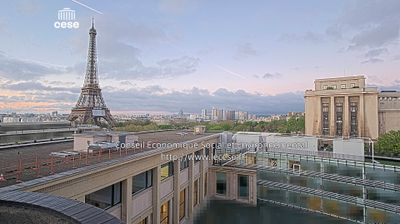
The human scale. After stellar coronas and full-disk Earths and seismograms, a rooftop in Paris at dawn. The Eiffel Tower in the left third of the frame, silhouetted against a pink-blue sky. In the foreground, a reflecting pool on the roof of the Conseil Economique mirrors the clouds. The light is that ten-minute golden window where the sky can't decide if it's night or morning.
This is the only image in the walk with a human-built structure at human scale. Everything else has been instruments and data. And suddenly — a tower. A piece of iron lattice, 330 meters of riveted wrought iron, built as a temporary exhibit in 1889 and never taken down. A containment structure for nothing. It holds no energy, loops no plasma, returns no signal. It just stands there, accumulating meaning.
Remind: Iron again. The chromosphere's iron ions at 304Å (Step 3). Australia's iron oxide desert (Step 5). And now wrought iron bolted into a lattice in Paris. The element that kills stars, colors continents, and makes the most photographed structure on Earth
Metaphor: Iron's career across scales: stellar death (fusion terminus) → continental pigment (oxidized desert) → human monument (engineered lattice) → reflected ghost (pool surface). At each scale it changes meaning. At stellar scale it's catastrophe. At human scale it's beauty. The pool's reflection is the lightest version — iron dematerialized into an image of itself
Idea: The Eiffel Tower is a seismograph. Not literally — but it sways in the wind, it responds to temperature, it contracts 6 inches in winter cold. It's an iron needle embedded in the lithosphere, vibrating with everything the city and the atmosphere do to it. It's the human-scale equivalent of Station ANMO — a structure that records forces it wasn't designed to measure.
No image for the final step. Just data. In the last 24 hours, the USGS recorded 290 earthquakes worldwide. The largest in this window: a M2.0 near Chickaloon, Alaska. Most are below magnitude 2 — invisible to anyone not listening with a machine. Here are the first ten, a kind of found poetry of the Earth's overnight restlessness:
M1.31 — 5 km SE of San Ramon, California
M1.14 — 6 km E of Borrego Springs, California
M1.75 — 20 km NNE of Avalon, California
M0.74 — 21 km SSW of La Quinta, California
M0.70 — 16 km NNW of Ivanof Bay, Alaska
M1.80 — 23 km WNW of Ivanof Bay, Alaska
M1.18 — 7 km NW of The Geysers, California
M0.70 — 6 km NNW of The Geysers, California
M2.00 — 50 km NNE of Chickaloon, Alaska
M0.98 — 8 km WNW of The Geysers, California
290 tiny fractures. 290 moments where the crust couldn't hold its shape and gave. Not catastrophes — adjustments. The planet fidgeting in its sleep.
Remind: The bird calls at Jasper Ridge (Step 9) — sharp acoustic discharges against silence. And the lightning map (Step 7) — sparse electrical discharges on a quiet continent. And the coronal loops (Step 1) — magnetic energy contained and occasionally released. The same pattern at every scale
Metaphor: The Earth doesn't crack — it speaks. Each micro-earthquake is a syllable in a language made of stress and release. 290 syllables today. Most too quiet for anyone to hear without a machine. The planet is not silent between the big quakes. It is always talking, at a volume calibrated to be heard only by its own instruments
Idea: The coronagraph blocks the photosphere to see the corona. The seismograph hears everything and separates nothing. But the USGS earthquake catalog is a third kind of instrument: a threshold filter. It only records events above a certain amplitude. It converts the continuous seismographic noise of Step 8 into discrete events — named, located, measured. It turns the planet's murmur into a list. And in doing so, it creates something the seismogram couldn't: narrative. Each line has a character (magnitude), a setting (place name), and an action (the quake). Data becomes story the moment you apply a threshold.